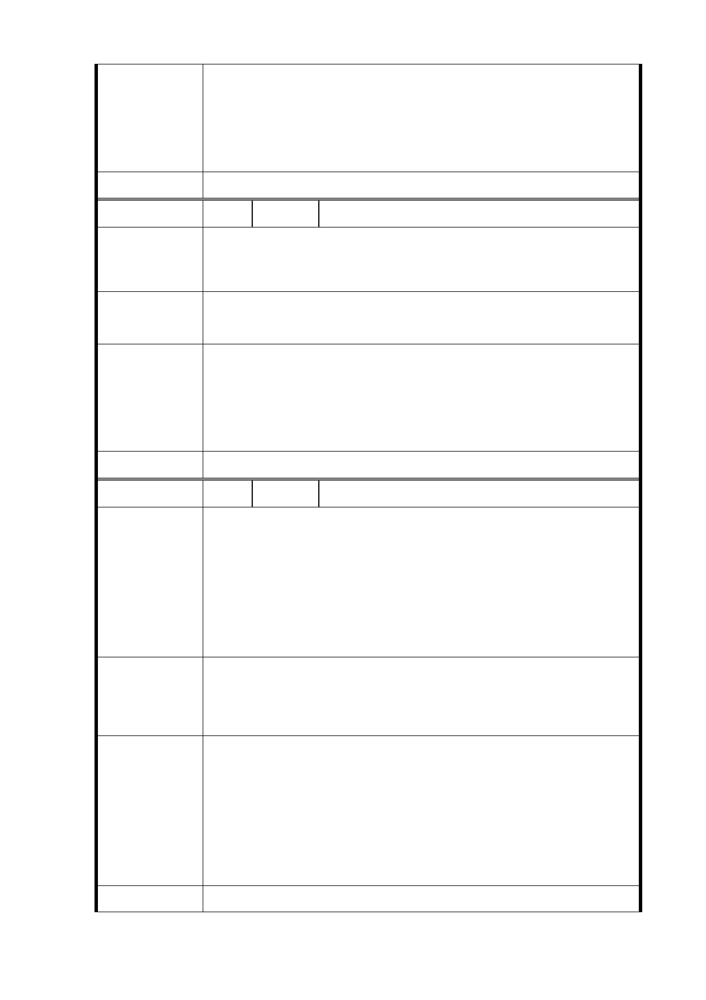

計手法及界面處理，兼顧都市景觀、公共住宅品質及
地區生活環境。
二、 未來開發後本基地衍生之停車需求將以內部化為原
則，並於考量附近地區居民停車需求，規劃足夠之停
車空間。
委 員 會 決 議 同編號 1
編 號 10 陳情人 洪○中
一、 避免里長擔心及新舊住民衝突。
陳 情 理 由 二、 104年1~2月之前挖的水池地層結構影片深挖約15公
尺、寬30公尺、長40公尺。
一、 規劃「信義計畫里」，里長官派。
建議辦法
二、 由此影片，研究地層結構，以消疑慮。
一、 後續將由本府民政局辦理本開發基地單獨設里之相關
市府回覆
意見
行政作業。
二、 經濟部中央地質調查所於 103 年間函告尚未發現活動
斷層，另本局將於本案規劃設計發包後，優先要求設
計團隊進行地質鑽探。
委 員 會 決 議 同編號 1
編 號 10-1 陳情人 洪○中
一、 建築物僅存四片磚牆，內部所有金屬均已拆除，如要
保留，重修費用太高，亦無任何可資緬懷之處。樓上
亦成危樓，不宜供人上樓。
陳 情 理 由 二、 建物本身歷史僅50-60年，附近民宅較歷史久遠者比比
皆是，造成民心浮動。
三、 原即以此計畫案量體過大而反對者，更有藉口將基地
面積削小，並與規劃之建築完全不搭調。
一、 儘速拆除福德平宅全部六棟建築。
建 議 辦 法 二、 社會局將所有寄放在廣慈博愛院福德平宅之戶籍遷
走，以符實情，並免有心人士心存僥倖。
一、 福德平宅經本市文化資產鑑定委員會 104 年 5 月 26
日決議(略以)「考量福德平宅具歷史意義，請都發局
市府回覆
意見
將福德平宅特色融入未來本基地規劃與設計。」，爰未
來本府將透過規劃設計手法，重現福德平宅之歷史風
貌。
二、 另為利本案全區整體開發，將於近期拆除福德平宅，
並作為簡易綠化及停車使用。
委 員 會 決 議 同編號 1
- 16 -